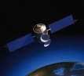

| About FreightMobile | |
An area under which many fleet operators have little control is the price of fuel, it can form a substantial portion of your overall costs. FreightMobile is an in vehicle satellite navigation, electronic POD and automatic vehicle location system within one self contained unit. |
|
| GPRS Communications | |
|  | Connected to your office FreightMap installation using GPRS communications, manifests produced at the office automatically appear on the vehicle screen. |
| Satellite Navigation | |
 |
There is no need for the driver to enter an address on screen, he simply selects the next destination from the manifest and is routed with voice instructions virtually to the door. |
The fuel and time savings with drivers no longer being lost, or having to turn around are immense. |
|
| Electronic POD | |
 |
On arrival at the destination an electronic POD and signature can be captured on screen and automatically sent back to your office FreightMap installation. |
| Automatic Vehicle Location | |
In the office you have the ability to track your fleet, see which deliveries have already been completed and trigger alerts for off route vehicles or extended periods of being stationary. |
|